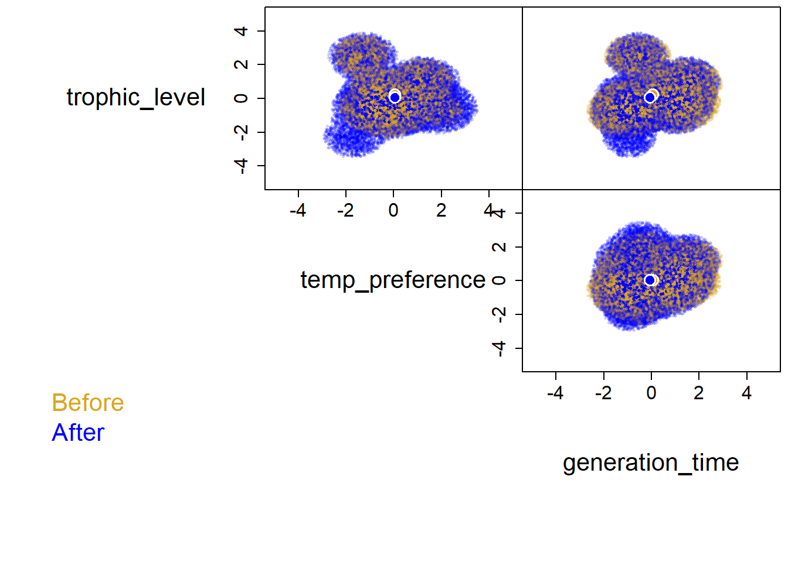
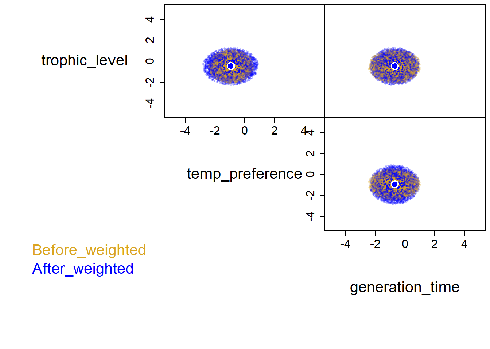
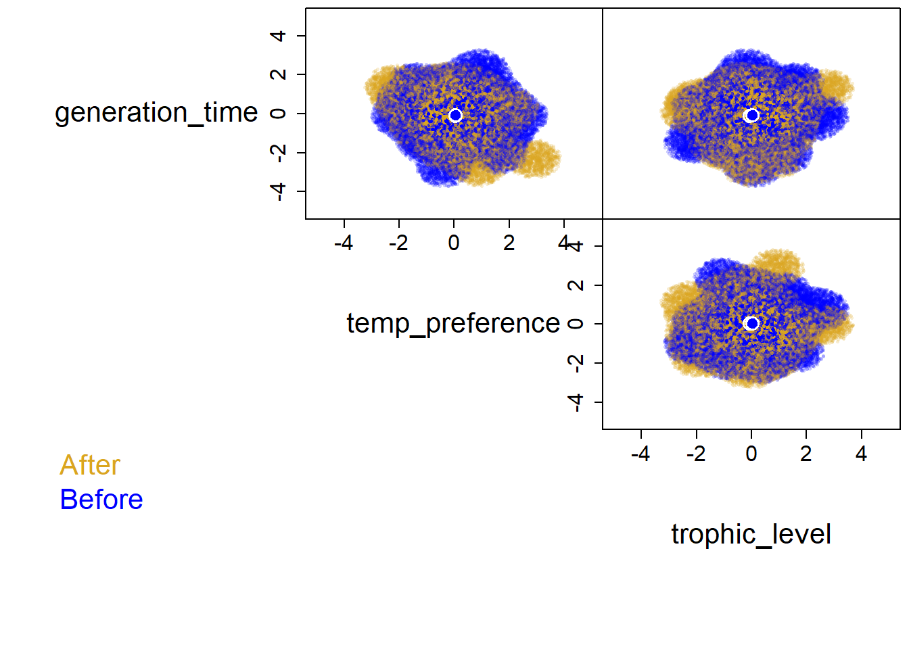

library(tidyverse)
## ── Attaching core tidyverse packages ──────────────────────── tidyverse 2.0.0 ──
## ✔ dplyr 1.1.2 ✔ readr 2.1.4
## ✔ forcats 1.0.0 ✔ stringr 1.5.0
## ✔ ggplot2 3.4.3 ✔ tibble 3.2.1
## ✔ lubridate 1.9.2 ✔ tidyr 1.3.0
## ✔ purrr 1.0.2
## ── Conflicts ────────────────────────────────────────── tidyverse_conflicts() ──
## ✖ dplyr::filter() masks stats::filter()
## ✖ dplyr::lag() masks stats::lag()
## ℹ Use the conflicted package (<http://conflicted.r-lib.org/>) to force all conflicts to become errors
left = tibble(name = c('a', 'b', 'c'),
n = c(1, 6, 7),
bio = c(100, 43, 57))
right = tibble(name = c('a', 'b', 'd', 'e'),
cals = c(500, 450, 570, 600))
left_join(left, right, by = 'name')
## # A tibble: 3 × 4
## name n bio cals
## <chr> <dbl> <dbl> <dbl>
## 1 a 1 100 500
## 2 b 6 43 450
## 3 c 7 57 NA
right_join(left, right, by = 'name')
## # A tibble: 4 × 4
## name n bio cals
## <chr> <dbl> <dbl> <dbl>
## 1 a 1 100 500
## 2 b 6 43 450
## 3 d NA NA 570
## 4 e NA NA 600
inner_join(left, right, by = 'name')
## # A tibble: 2 × 4
## name n bio cals
## <chr> <dbl> <dbl> <dbl>
## 1 a 1 100 500
## 2 b 6 43 450
full_join(left, right, by = 'name')
## # A tibble: 5 × 4
## name n bio cals
## <chr> <dbl> <dbl> <dbl>
## 1 a 1 100 500
## 2 b 6 43 450
## 3 c 7 57 NA
## 4 d NA NA 570
## 5 e NA NA 600
# multiple matches
fish = tibble(species = rep(c('Salmon', 'Cod'),times = 3),
year = rep(c(1999,2005,2020), each = 2),
catch = c(50, 60, 40, 50, 60, 100))
col = tibble(species = c('Salmon', 'Cod'),
coast = c('West', 'East'))
left_join(fish, col, by = 'species')
## # A tibble: 6 × 4
## species year catch coast
## <chr> <dbl> <dbl> <chr>
## 1 Salmon 1999 50 West
## 2 Cod 1999 60 East
## 3 Salmon 2005 40 West
## 4 Cod 2005 50 East
## 5 Salmon 2020 60 West
## 6 Cod 2020 100 EastWorkshop 9: community trait hypervolumes
This workshop discusses working with community trait data by introducing the hypervolume package by going over how to prepare the data and how to build hypervolumes in multiple ways.
R script: github
Merge/Join
If two data frames contain different columns of data, then they can be merged together with the family of join functions.
+left_join() = uses left df as template and joins all matching columns from right df +right_join() = uses right df as template and joins all matching columns from left df +inner_join() = only matches columns contained in both dfs +full_join() = combines all rows in both dfs
scaling data
Because hypervolumes can be generated with any continuous data as an axes, many of the times the units are not combatible. Blonder et al. 2014 & 2018 to convert all of the axes into the same units. This can be done by taking the z-score of the values to convert units into standard deviations. Z-scoring data can be done with the formula: \[ z = \frac{x_{i}-\overline{x}}{sd} \] Where \(x_{i}\) is a value, \(\overline{x}\) is the mean, and \(sd\) is the standard deviation. By z-scoring each axis, 0 is the mean of that axis, a value of 1 means that the value is 1 standard deviation above the global mean of that axis, and a value of -1 is 1 standard deviation below the global mean of the axis. In R this can be done manually or with the scale() function.
fish = tibble(species = rep(c('Salmon', 'Cod'),times = 3),
year = rep(c(1999,2005,2020), each = 2),
catch = c(50, 60, 40, 50, 60, 100))
#
fish = fish |>
mutate(zcatch1 = (catch - mean(catch))/sd(catch), # manual
zcatch2 = scale(catch)) # with scale
fish
## # A tibble: 6 × 5
## species year catch zcatch1 zcatch2[,1]
## <chr> <dbl> <dbl> <dbl> <dbl>
## 1 Salmon 1999 50 -0.477 -0.477
## 2 Cod 1999 60 0 0
## 3 Salmon 2005 40 -0.953 -0.953
## 4 Cod 2005 50 -0.477 -0.477
## 5 Salmon 2020 60 0 0
## 6 Cod 2020 100 1.91 1.91
# center = mean, scale = sd
fish$zcatch2
## [,1]
## [1,] -0.4767313
## [2,] 0.0000000
## [3,] -0.9534626
## [4,] -0.4767313
## [5,] 0.0000000
## [6,] 1.9069252
## attr(,"scaled:center")
## [1] 60
## attr(,"scaled:scale")
## [1] 20.97618nesting data
One benefit of tibbles is that they can contain list columns. This means that we can make columns of tibbles that are nested within a dataset. Nesting creates a list-column of data frames; unnesting flattens it back out into regular columns. Nesting is a implicitly summarising operation: you get one row for each group defined by the non-nested columns. This is useful in conjunction with other summaries that work with whole datasets, most notably models. This can be done with the nest() and then flattened with unnest()
fish = tibble(species = rep(c('Salmon', 'Cod'),times = 3),
year = rep(c(1999,2005,2020), each = 2),
catch = c(50, 60, 40, 50, 60, 100))
# using group_by
fish_nest = fish |>
group_by(species) |>
nest()
fish_nest
## # A tibble: 2 × 2
## # Groups: species [2]
## species data
## <chr> <list>
## 1 Salmon <tibble [3 × 2]>
## 2 Cod <tibble [3 × 2]>
fish_nest$data
## [[1]]
## # A tibble: 3 × 2
## year catch
## <dbl> <dbl>
## 1 1999 50
## 2 2005 40
## 3 2020 60
##
## [[2]]
## # A tibble: 3 × 2
## year catch
## <dbl> <dbl>
## 1 1999 60
## 2 2005 50
## 3 2020 100
# using .by in nest
# column name becomes data unless you change .key
fish_nest2 = fish |>
nest(.by = year, .key = 'df')
fish_nest2
## # A tibble: 3 × 2
## year df
## <dbl> <list>
## 1 1999 <tibble [2 × 2]>
## 2 2005 <tibble [2 × 2]>
## 3 2020 <tibble [2 × 2]>
fish_nest2$df
## [[1]]
## # A tibble: 2 × 2
## species catch
## <chr> <dbl>
## 1 Salmon 50
## 2 Cod 60
##
## [[2]]
## # A tibble: 2 × 2
## species catch
## <chr> <dbl>
## 1 Salmon 40
## 2 Cod 50
##
## [[3]]
## # A tibble: 2 × 2
## species catch
## <chr> <dbl>
## 1 Salmon 60
## 2 Cod 100map
purr
The newest and new standard package with tidyverse is purr with its set of map() functions. Some similarity to plyr (and base) and dplyr functions but with more consistent names and arguments. Notice that map function can have some specification for the type of output. + map() makes a list. + map_lgl() makes a logical vector. + map_int() makes an integer vector. + map_dbl() makes a double vector. + map_chr() makes a character vector.
df = iris |>
select(-Species)
#summary statistics
map_dbl(df, mean)
## Sepal.Length Sepal.Width Petal.Length Petal.Width
## 5.843333 3.057333 3.758000 1.199333
# using map with mutate and nest
d = tibble(species = rep(c('Salmon', 'Cod'),times = 3),
year = rep(c(1999,2005,2020), each = 2),
catch = c(50, 60, 40, 50, 60, 100)) |>
nest(.by = species) |>
mutate(correlation = map(data, \(data) cor.test(data$year, data$catch)))
d
## # A tibble: 2 × 3
## species data correlation
## <chr> <list> <list>
## 1 Salmon <tibble [3 × 2]> <htest>
## 2 Cod <tibble [3 × 2]> <htest>
d$correlation
## [[1]]
##
## Pearson's product-moment correlation
##
## data: data$year and data$catch
## t = 0.96225, df = 1, p-value = 0.5122
## alternative hypothesis: true correlation is not equal to 0
## sample estimates:
## cor
## 0.6933752
##
##
## [[2]]
##
## Pearson's product-moment correlation
##
## data: data$year and data$catch
## t = 1.963, df = 1, p-value = 0.3
## alternative hypothesis: true correlation is not equal to 0
## sample estimates:
## cor
## 0.8910421Hypervolumes
Hypervolumes are a multidimensional tool that is based on Hutchinson’s n-dimensional niche concept and we can build them with the hypervolume package.
Preparing the data
Typically we have a dataset that has the abundance of the community and another that has trait data. Therefore we need to combine them. Also, we can’t have NAs, so we have to filter any missing data one we combine the datasets.
# abundance data
ab = read_csv('data/abundHermine.csv')
## Rows: 68 Columns: 5
## ── Column specification ────────────────────────────────────────────────────────
## Delimiter: ","
## chr (4): site, species, hur, period
## dbl (1): abund
##
## ℹ Use `spec()` to retrieve the full column specification for this data.
## ℹ Specify the column types or set `show_col_types = FALSE` to quiet this message.
# trait data
tr = read_csv('data/fishTraits.csv')
## Rows: 46 Columns: 7
## ── Column specification ────────────────────────────────────────────────────────
## Delimiter: ","
## chr (4): species, project, Class, Order
## dbl (3): trophic_level, temp_preference, generation_time
##
## ℹ Use `spec()` to retrieve the full column specification for this data.
## ℹ Specify the column types or set `show_col_types = FALSE` to quiet this message.
# combine
df = left_join(ab, tr, by = 'species') |>
drop_na()Once combined we can select only the columns we want in the hypervolume, z-score and nest the data.
df = df |>
select(period, trophic_level, temp_preference, generation_time) |>
mutate(across(trophic_level:generation_time, scale)) |>
group_by(period) |>
nest()
df
## # A tibble: 2 × 2
## # Groups: period [2]
## period data
## <chr> <list>
## 1 Before <tibble [23 × 3]>
## 2 After <tibble [25 × 3]>Building hypervolumes
With a nested dataset of our columns that we want to build hypervolumes for we can use mutate() and map() to generate the hypervolume.
library(hypervolume)
## Loading required package: Rcpp
df = df |>
mutate(hv = map(data, ~hypervolume_gaussian(.x, name = period,
samples.per.point = 1000,
kde.bandwidth = estimate_bandwidth(.x),
sd.count = 3,
quantile.requested = 0.95,
quantile.requested.type = "probability",
chunk.size = 1000,
verbose = F)))
## Note that the formula used for the Silverman estimator differs in version 3 compared to prior versions of this package.
## Use method='silverman-1d' to replicate prior behavior.
## Note that the formula used for the Silverman estimator differs in version 3 compared to prior versions of this package.
## Use method='silverman-1d' to replicate prior behavior.
df
## # A tibble: 2 × 3
## # Groups: period [2]
## period data hv
## <chr> <list> <list>
## 1 Before <tibble [23 × 3]> <Hypervlm>
## 2 After <tibble [25 × 3]> <Hypervlm>
df$hv
## [[1]]
## ***** Object of class Hypervolume *****
## Name: Before
## Method: Gaussian kernel density estimate
## Number of data points (after weighting): 23
## Dimensionality: 3
## Volume: 70.977153
## Random point density: 188.229585
## Number of random points: 13360
## Random point values:
## min: 0.000
## mean: 0.001
## median: 0.000
## max:0.004
## Parameters:
## kde.bandwidth: 0.5996196 0.5570341 0.6430513
## kde.method: silverman
## samples.per.point: 1000
## sd.count: 3
## quantile.requested: 0.95
## quantile.requested.type: probability
##
## [[2]]
## ***** Object of class Hypervolume *****
## Name: After
## Method: Gaussian kernel density estimate
## Number of data points (after weighting): 25
## Dimensionality: 3
## Volume: 90.498581
## Random point density: 160.776001
## Number of random points: 14550
## Random point values:
## min: 0.000
## mean: 0.000
## median: 0.000
## max:0.002
## Parameters:
## kde.bandwidth: 0.6391039 0.6706801 0.5990887
## kde.method: silverman
## samples.per.point: 1000
## sd.count: 3
## quantile.requested: 0.95
## quantile.requested.type: probabilityplotting hypervolumes
We can plot multiple hypervolumes by joining them together
hvj = hypervolume_join(df$hv[[1]], df$hv[[2]])
plot(hvj, pairplot = T, colors=c('goldenrod','blue'),
show.3d=FALSE,plot.3d.axes.id=NULL,
show.axes=TRUE, show.frame=TRUE,
show.random=T, show.density=TRUE,show.data=F,
show.legend=T, limits=c(-5,5),
show.contour=F, contour.lwd= 2,
contour.type='alphahull',
contour.alphahull.alpha=0.25,
contour.ball.radius.factor=1,
contour.kde.level=0.01,
contour.raster.resolution=100,
show.centroid=TRUE, cex.centroid=2,
point.alpha.min=0.2, point.dark.factor=0.5,
cex.random=0.5,cex.data=1,cex.axis=1.5,cex.names=2,cex.legend=2,
num.points.max.data = 100000, num.points.max.random = 200000, reshuffle=TRUE,
plot.function.additional=NULL,
verbose=FALSE
)
## The legacy packages maptools, rgdal, and rgeos, underpinning the sp package,
## which was just loaded, will retire in October 2023.
## Please refer to R-spatial evolution reports for details, especially
## https://r-spatial.org/r/2023/05/15/evolution4.html.
## It may be desirable to make the sf package available;
## package maintainers should consider adding sf to Suggests:.
## The sp package is now running under evolution status 2
## (status 2 uses the sf package in place of rgdal)
hypervolume metrics
The geometry of hypervolumes are useful when characterizing and comparing hypervolumes. Hypervolume size represents the variation of the data, centroid distance compares the euclidian distance between two hypervolume centroids (mean conditions), and overlap measures the simularity of hypervolumes.
# size
df = df |>
mutate(hv_size = map_dbl(hv, \(hv) get_volume(hv)))
df
## # A tibble: 2 × 4
## # Groups: period [2]
## period data hv hv_size
## <chr> <list> <list> <dbl>
## 1 Before <tibble [23 × 3]> <Hypervlm> 71.0
## 2 After <tibble [25 × 3]> <Hypervlm> 90.5
# centroid distance
hypervolume_distance(df$hv[[1]], df$hv[[2]], type = 'centroid', check.memory=F)
## [1] 0.2149368
# overlap
hvset = hypervolume_set(df$hv[[1]], df$hv[[2]], check.memory = F)
## Choosing num.points.max=53958 (use a larger value for more accuracy.)
## Using minimum density of 160.776001
## Retaining 11411 points in hv1 and 14550 points in hv2.
## Beginning ball queries...
##
## Building tree...
## done.
## Ball query...
##
## done.
##
## Building tree...
## done.
## Ball query...
##
## done.
## Finished ball queries.
hypervolume_overlap_statistics(hvset)
## jaccard sorensen frac_unique_1 frac_unique_2
## 0.74977450 0.85699557 0.02515117 0.23543559Weight hypervolume input
The above hypervolume is just based on the traits using presence of species, but we can weight the points to shape the hypervolume based on abundance
#prep data
df_w = left_join(ab, tr, by = 'species') |>
drop_na() |>
select(period, abund, trophic_level, temp_preference, generation_time) |>
mutate(across(trophic_level:generation_time, scale)) |>
group_by(period) |>
nest(weight = abund, data = trophic_level:generation_time)
df_w
## # A tibble: 2 × 3
## # Groups: period [2]
## period weight data
## <chr> <list> <list>
## 1 Before <tibble [23 × 1]> <tibble [23 × 3]>
## 2 After <tibble [25 × 1]> <tibble [25 × 3]>
# make hypervolumes
df_w = df_w |>
mutate(hv = map2(data,weight, ~hypervolume_gaussian(.x, name = paste(period,'weighted',sep = '_'),
weight = .y$abund,
samples.per.point = 1000,
kde.bandwidth = estimate_bandwidth(.x),
sd.count = 3,
quantile.requested = 0.95,
quantile.requested.type = "probability",
chunk.size = 1000,
verbose = F)),
hv_size = map_dbl(hv, \(hv) get_volume(hv)))
## Note that the formula used for the Silverman estimator differs in version 3 compared to prior versions of this package.
## Use method='silverman-1d' to replicate prior behavior.
## Note that the formula used for the Silverman estimator differs in version 3 compared to prior versions of this package.
## Use method='silverman-1d' to replicate prior behavior.
## Warning: There were 2 warnings in `mutate()`.
## The first warning was:
## ℹ In argument: `hv = map2(...)`.
## ℹ In group 1: `period = "After"`.
## Caused by warning in `hypervolume_gaussian()`:
## ! The sum of the weights must be equal to 1. Normalizing the weights.
## ℹ Run `dplyr::last_dplyr_warnings()` to see the 1 remaining warning.
df_w
## # A tibble: 2 × 5
## # Groups: period [2]
## period weight data hv hv_size
## <chr> <list> <list> <list> <dbl>
## 1 Before <tibble [23 × 1]> <tibble [23 × 3]> <Hypervlm> 18.9
## 2 After <tibble [25 × 1]> <tibble [25 × 3]> <Hypervlm> 24.3
hvj_w = hypervolume_join(df_w$hv[[1]], df_w$hv[[2]])
plot(hvj_w, pairplot = T, colors=c('goldenrod','blue'),
show.3d=FALSE,plot.3d.axes.id=NULL,
show.axes=TRUE, show.frame=TRUE,
show.random=T, show.density=TRUE,show.data=F,
show.legend=T, limits=c(-5,5),
show.contour=F, contour.lwd= 2,
contour.type='alphahull',
contour.alphahull.alpha=0.25,
contour.ball.radius.factor=1,
contour.kde.level=0.01,
contour.raster.resolution=100,
show.centroid=TRUE, cex.centroid=2,
point.alpha.min=0.2, point.dark.factor=0.5,
cex.random=0.5,cex.data=1,cex.axis=1.5,cex.names=2,cex.legend=2,
num.points.max.data = 100000, num.points.max.random = 200000, reshuffle=TRUE,
plot.function.additional=NULL,
verbose=FALSE
)
# centroid distance
hypervolume_distance(df_w$hv[[1]], df_w$hv[[2]], type = 'centroid', check.memory=F)
## [1] 0.05072529
# overlap
hvset_w = hypervolume_set(df_w$hv[[1]], df_w$hv[[2]], check.memory = F)
## Choosing num.points.max=53958 (use a larger value for more accuracy.)
## Using minimum density of 160.428425
## Retaining 3030 points in hv1 and 3897 points in hv2.
## Beginning ball queries...
##
## Building tree...
## done.
## Ball query...
##
## done.
##
## Building tree...
## done.
## Ball query...
##
## done.
## Finished ball queries.
hypervolume_overlap_statistics(hvset_w)
## jaccard sorensen frac_unique_1 frac_unique_2
## 0.75471164 0.86021158 0.01683168 0.23540944From mean and sd
Sometimes, we do not have enough points to meet assumptions to make a hypervolume. Therefore, we can simulate random points based on mean and sd of our axes. We can then simulate the information needed and make our hypervolumes.
# mean and sd
df_m = left_join(ab, tr, by = 'species') |>
drop_na() |>
pivot_longer(trophic_level:generation_time, names_to = 'trait', values_to = 'value') |>
group_by(period,trait) |>
summarize(mean = mean(value),
sd = sd(value))
## `summarise()` has grouped output by 'period'. You can override using the
## `.groups` argument.
df_m
## # A tibble: 6 × 4
## # Groups: period [2]
## period trait mean sd
## <chr> <chr> <dbl> <dbl>
## 1 After generation_time 3.10 1.79
## 2 After temp_preference 25.1 1.22
## 3 After trophic_level 3.52 0.150
## 4 Before generation_time 3.35 1.90
## 5 Before temp_preference 25.0 1.00
## 6 Before trophic_level 3.54 0.139
#generate points
# number of points
n = 50
df_tot = df_m |> slice(rep(1:n(), each=n))|>
mutate(point = map2_dbl(mean,sd, \(mean,sd) rnorm(1,mean =mean,sd =sd))) |>
group_by(period, trait) |>
mutate(num = row_number()) |>
select(-mean, -sd)|>
pivot_wider(names_from = trait, values_from = point)|>
select(-num) |>
mutate(across(generation_time:trophic_level,scale)) |>
group_by(period) |>
nest()
# generate hypervolumes
df_tot = df_tot |>
mutate(hv = map(data, ~hypervolume_gaussian(.x, name = period,
samples.per.point = 1000,
kde.bandwidth = estimate_bandwidth(.x),
sd.count = 3,
quantile.requested = 0.95,
quantile.requested.type = "probability",
chunk.size = 1000,
verbose = F)),
hv_size = map_dbl(hv, \(hv) get_volume(hv)))
## Note that the formula used for the Silverman estimator differs in version 3 compared to prior versions of this package.
## Use method='silverman-1d' to replicate prior behavior.
## Note that the formula used for the Silverman estimator differs in version 3 compared to prior versions of this package.
## Use method='silverman-1d' to replicate prior behavior.
#plot
hvj_tot = hypervolume_join(df_tot$hv[[1]], df_tot$hv[[2]])
plot(hvj_tot, pairplot = T, colors=c('goldenrod','blue'),
show.3d=FALSE,plot.3d.axes.id=NULL,
show.axes=TRUE, show.frame=TRUE,
show.random=T, show.density=TRUE,show.data=F,
show.legend=T, limits=c(-5,5),
show.contour=F, contour.lwd= 2,
contour.type='alphahull',
contour.alphahull.alpha=0.25,
contour.ball.radius.factor=1,
contour.kde.level=0.01,
contour.raster.resolution=100,
show.centroid=TRUE, cex.centroid=2,
point.alpha.min=0.2, point.dark.factor=0.5,
cex.random=0.5,cex.data=1,cex.axis=1.5,cex.names=2,cex.legend=2,
num.points.max.data = 100000, num.points.max.random = 200000, reshuffle=TRUE,
plot.function.additional=NULL,
verbose=FALSE
)
# centroid distance
hypervolume_distance(df_tot$hv[[1]], df_tot$hv[[2]], type = 'centroid', check.memory=F)
## [1] 0.09854122
# overlap
hvset_tot = hypervolume_set(df_tot$hv[[1]], df_tot$hv[[2]], check.memory = F)
## Choosing num.points.max=53958 (use a larger value for more accuracy.)
## Using minimum density of 255.736643
## Retaining 25080 points in hv1 and 26640 points in hv2.
## Beginning ball queries...
##
## Building tree...
## done.
## Ball query...
##
## done.
##
## Building tree...
## done.
## Ball query...
##
## done.
## Finished ball queries.
hypervolume_overlap_statistics(hvset_tot)
## jaccard sorensen frac_unique_1 frac_unique_2
## 0.6698068 0.8022566 0.1728070 0.2212203